Inami, Hyogo: things to do, food and stays
Inami · Hyogo
Inami
Highlighted on the Hyogo map.
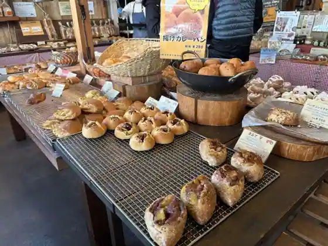
Stay
No bookable places to stay found in Inami — nearest options in Harima.
Dining
山のパン屋 ダディーズ・ベーカリー 稲美店
Yama No Bakery Ya Dadizu Bakery Inami
万葉
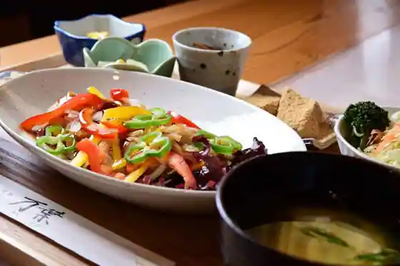
Manyo
うどん料理 いなみ
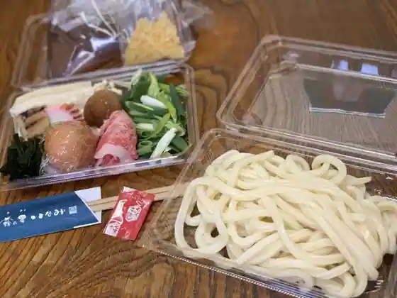
Udon Ryori Inami
御菓子司 松葉堂
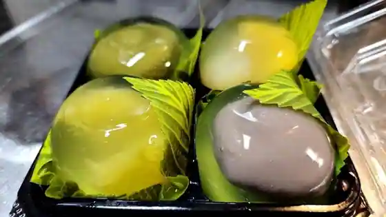
O Kashi Tsukasa Matsuba Do
かしわ家
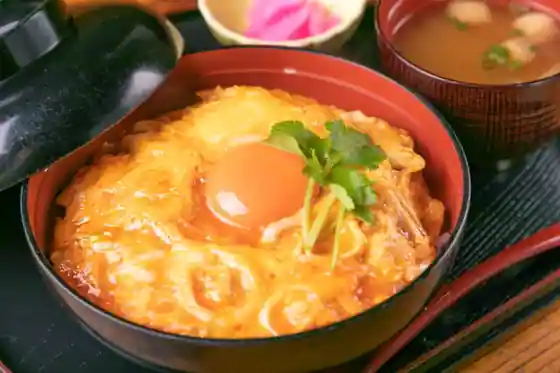
Kashiwa Ie
ビッグママ
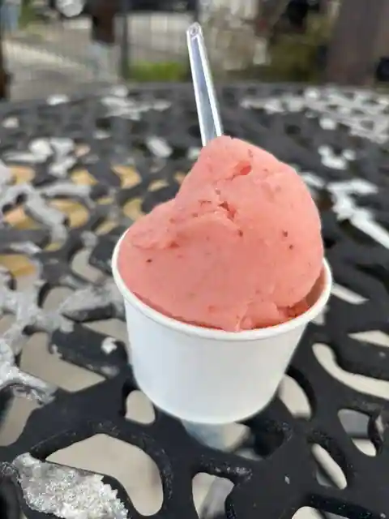
Biggumama
パン・ド・ミ 稲美店
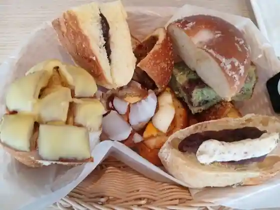
Bakery Do Mi Inami
そば料理 いなみ
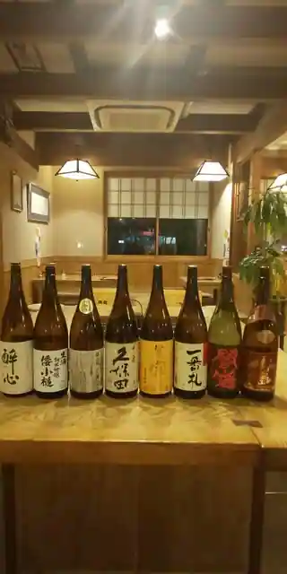
Soba Ryori Inami
かしわ家 国岡店
Kashiwa Ie Kunioka
道林
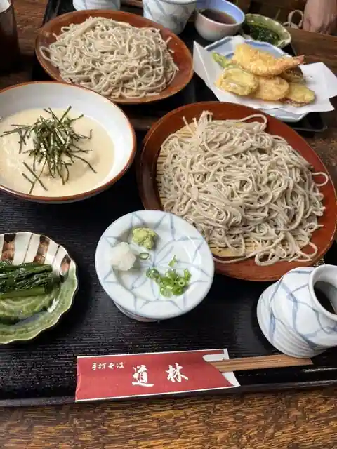
Michibayashi
ハナムスビ
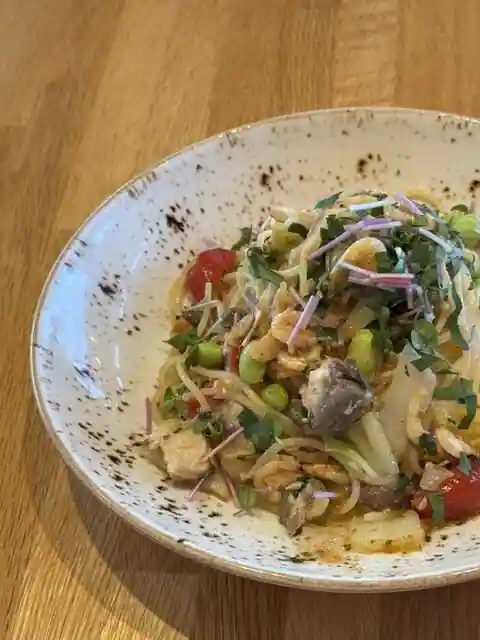
Hanamusubi
#NOCA inami Farm to Table
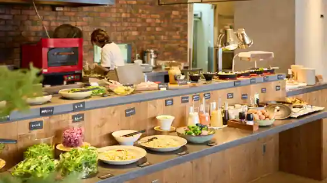
#NOCA inami Farm to Table
播州醤油中華そば＆つけ麺 今昔物語
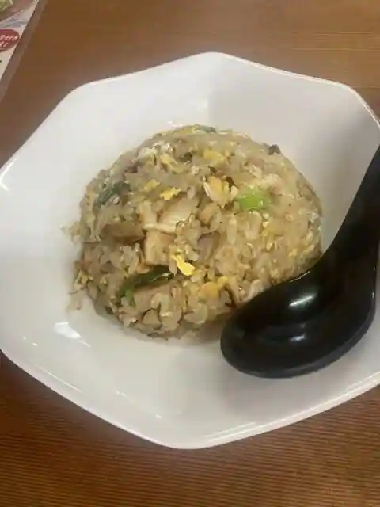
Banshu Shoyu Chuka Soba & Tsuke Men Konjaku Monogatari
そば切り 稲美
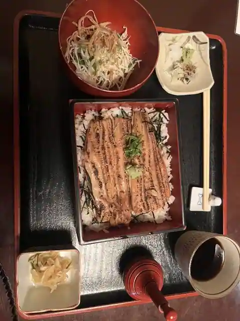
Soba Kiri Inami
文明堂 工場直売店
Bunmeido Kojo Chokubai
パン工房 りとは
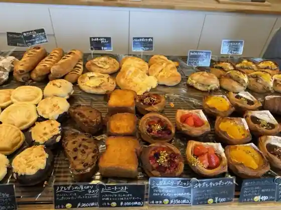
Bakery Kobo Ritoha
焼肉 鈴
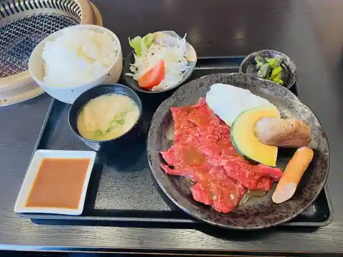
Yakiniku Suzu
博多ラーメン 片岡屋 稲美店
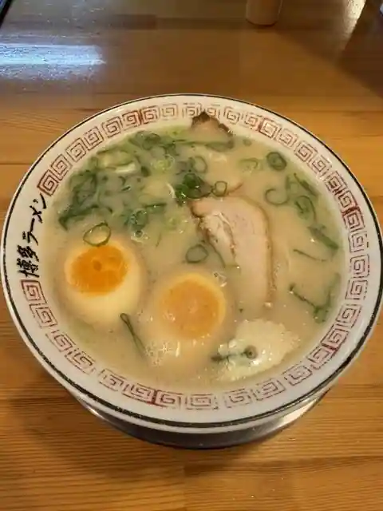
Hakata Ramen Kataoka Ya Inami
自家製麺セルフうどん むぎわら
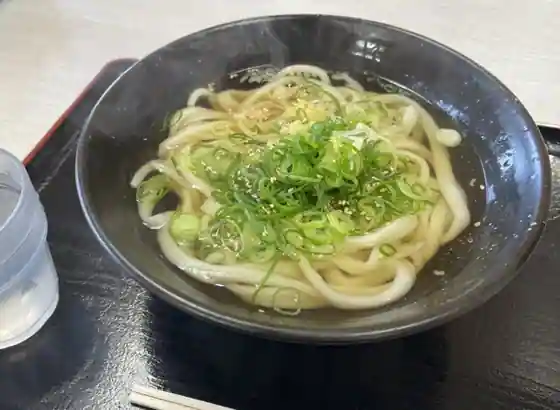
Jikasei Men Serufu Udon Mugiwara
和牛工房ゆかり 稲美総本店
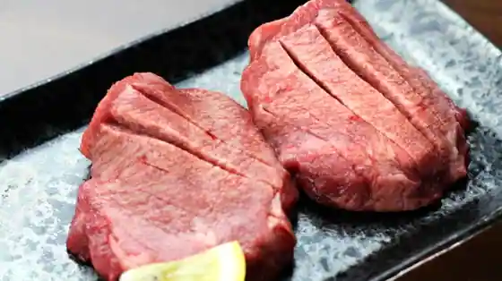
Wagyu Kobo Yukari Inami So Hon
御食事 デン
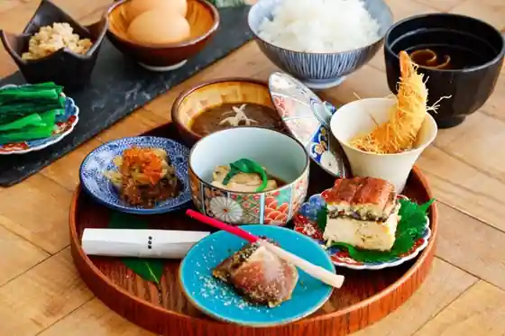
Mike Koto Den
播磨水産 稲美国岡店
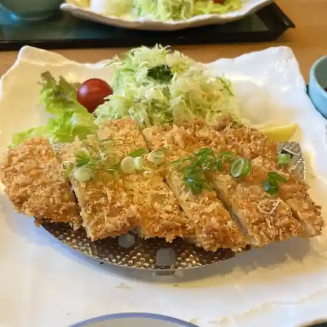
Harima Suisan Inami Kunioka
たもや
Tamoya
１００万ドル本舗 稲美店
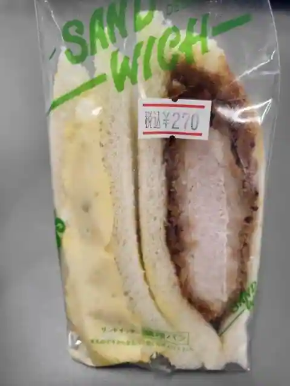
100 Man Doru Honpo Inami